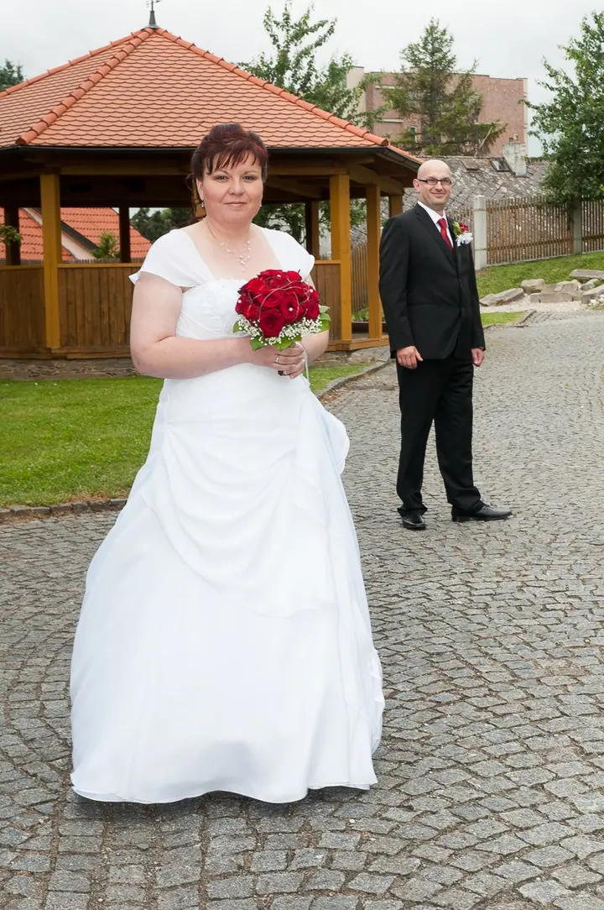
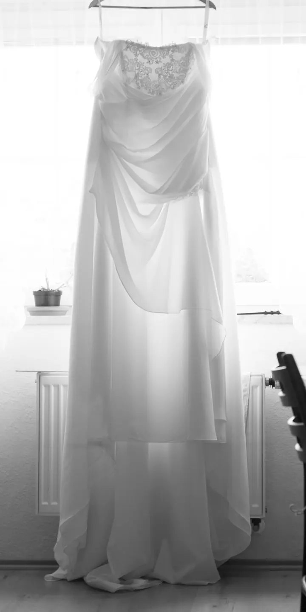
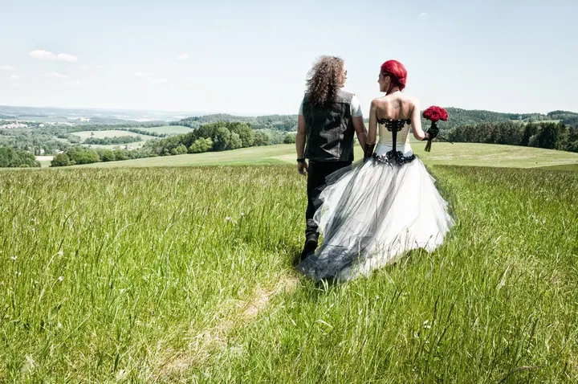
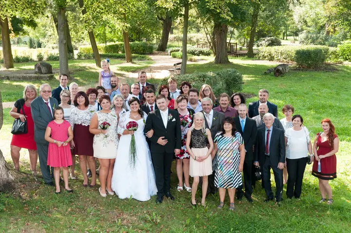
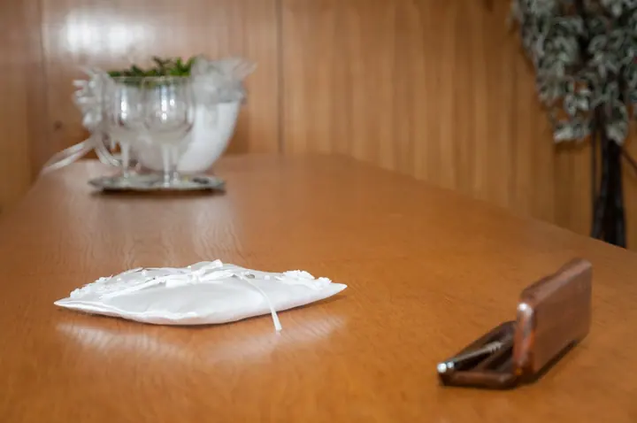
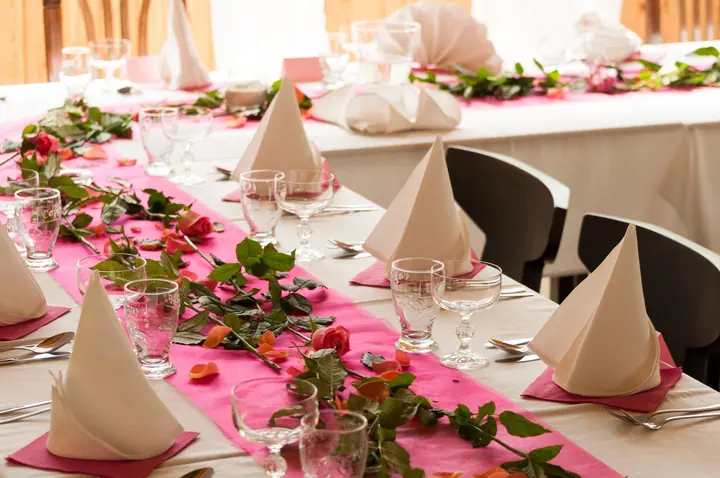

Svatby
Fotím přípravy, obřad, společné focení, hostinu i část večerní zábavy. Pár dní před svatbou si v čase vašeho obřadu projdu místo obřadu, hostiny i zábavy, abych věděl, jaké tam bude světlo.





Jmenuji se Martin Ženíšek a fotím svatby, portréty a rodiny v Plzni a okolí. Většinu let jsem strávil v ateliéru, takže umím pracovat se světlem i s lidmi, kteří před objektivem nestojí každý den. Focení se u mě nemusíte bát.
Více o mně
„Zakládám si na atmosféře, přístupu a pohodě při focení.“
— Martin Ženíšek
Fotím přípravy, obřad, společné focení, hostinu i část večerní zábavy. Pár dní před svatbou si v čase vašeho obřadu projdu místo obřadu, hostiny i zábavy, abych věděl, jaké tam bude světlo.
Portrétní focení v ateliéru, v interiéru nebo venku, včetně glamour. Většinu zakázek jsem nafotil právě v ateliéru se studiovým světlem.
Rodinné focení v ateliéru pro rodiče, děti i prarodiče. V klidu a bez spěchu, aby se u focení všichni cítili dobře.
Učím základy i pokročilé svícení v ateliéru a práci v Adobe Photoshop Lightroom. Vedu skupinové i individuální workshopy, spolupracuji s pražskou školou NICOM a.s.
Jsem fotograf z Plzně. Vystudoval jsem IDIF a skoro všechny zakázky jsem pak fotil v ateliéru. Sedm let jsem měl vlastní ateliér, šest z nich pod názvem PhotoProgress, kde fotila necelá dvoustovka dalších fotografů. Nejčastěji fotím portréty, ale ke své práci patří i svatby, rodiny a koncerty kapel.
Při focení mi jde hlavně o atmosféru, přístup a pohodu. Vzpomínky v hlavě časem vyblednou, ale s pěknou fotkou si připomenete nejen tehdejší zážitky, ale i samotné focení. Fotky upravuji citlivě: odstraním dočasné vady pleti nebo lesk, ale postavy ani obličeje nikdy neupravuji.
Fotografii také učím. Vedl jsem třináct skupinových workshopů včetně víkendové školy, dnes se věnuji hlavně individuálním lekcím a spolupracuji s pražskou školou NICOM a.s. Měl jsem osm samostatných výstav v západních Čechách a vydávám autorské kalendáře, několik let i se zámkem Štědrá.
Focení domlouvám nejraději po telefonu. Volat můžete každý den, nejlépe odpoledne nebo večer. Napsat mi můžete i e-mailem nebo přes Messenger.
Před každou svatbou spolu podepíšeme smlouvu s místem, podmínkami a detaily focení. Rezervaci potvrdíte zálohou ve výši třetiny ceny.
Několik dní před svatbou si v čase vašeho obřadu projdu místo obřadu, hostiny i zábavy. V den svatby už pak přesně vím, kde bude jaké světlo.
Upravené fotky dostanete na dvou flash discích ve dvou velikostech: v plné pro tisk a ve zmenšené pro sociální sítě. Pro kamarády a známé vám zdarma můžu zřídit i veřejnou fotogalerii.
Obřad a společné focení stojí 11 990 Kč, s hostinou 16 990 Kč. Celý den od příprav po část večerní zábavy vyjde na 23 990 Kč. Ceny jsou orientační a podle vašich přání se můžou změnit, například když chcete druhého fotografa nebo fotokoutek.
Tisk fotografií, album a cestovné. Pokud nebudu pozvaný ke svatebnímu stolu, cena se zvýší o 1 000 Kč.
Smlouva, kterou spolu podepíšeme, vám v případě mé nemoci zaručuje náhradního fotografa.
Ne. Při základní úpravě odstraním jen dočasné vady pleti jako opar, škrábnutí nebo modřinu a vyčistím lesknoucí se pleť a trčící vlasy. Tvar postav ani obličejů neměním.